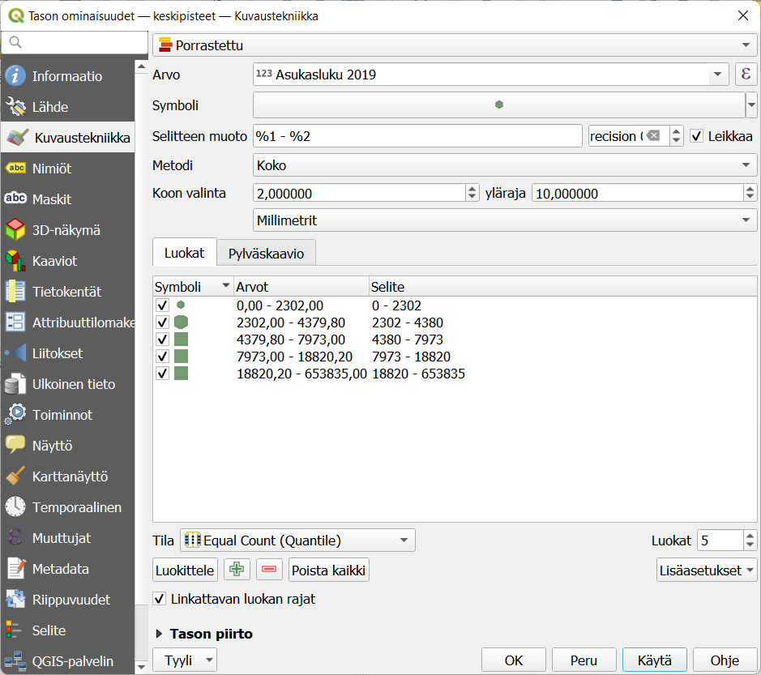
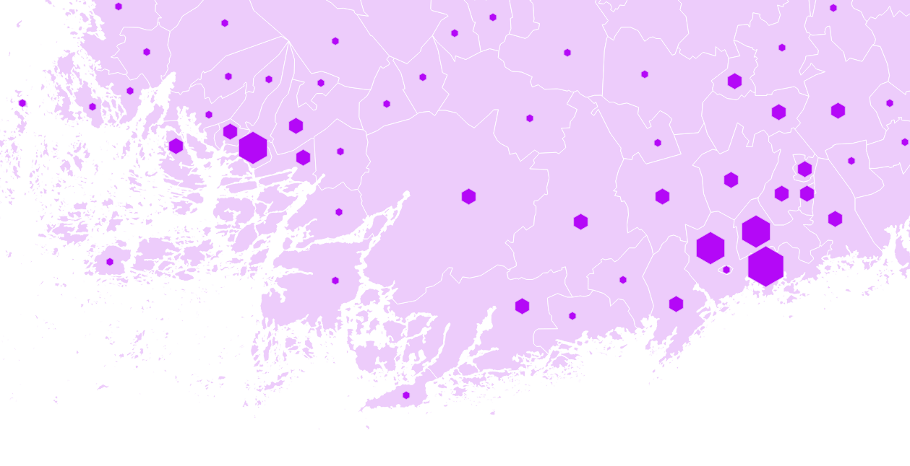
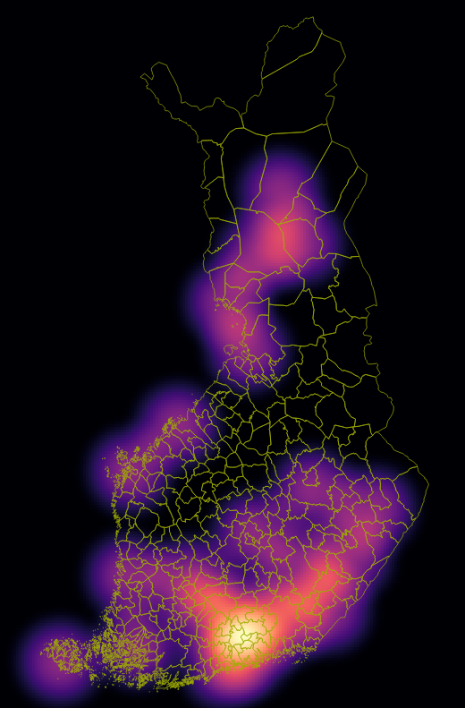
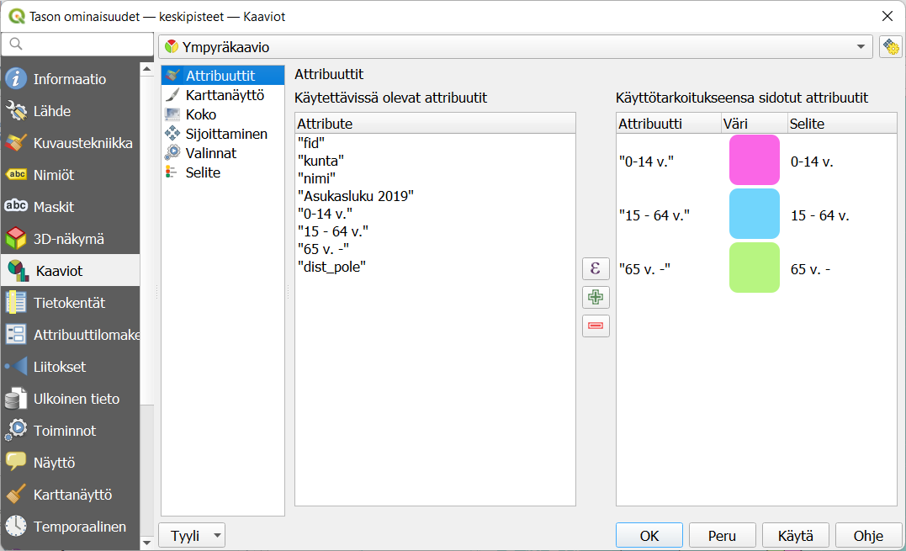
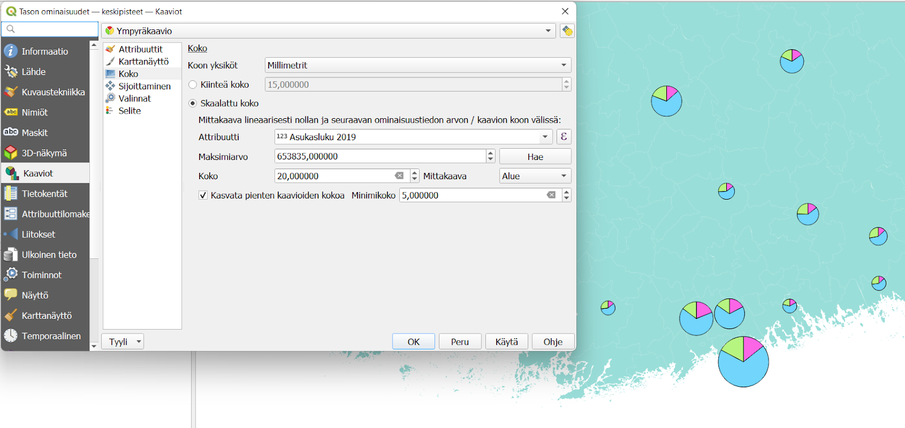
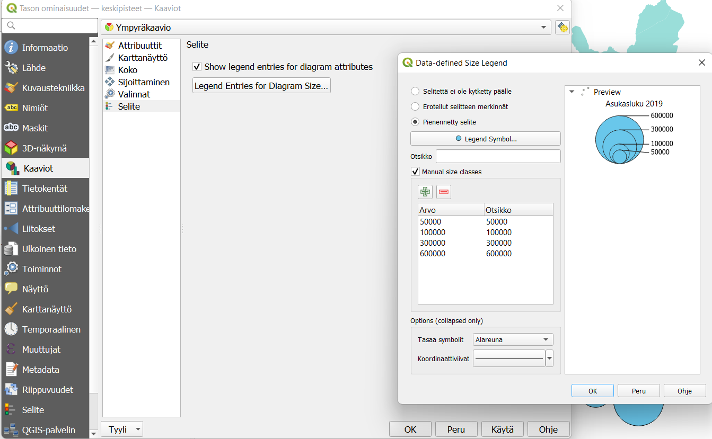
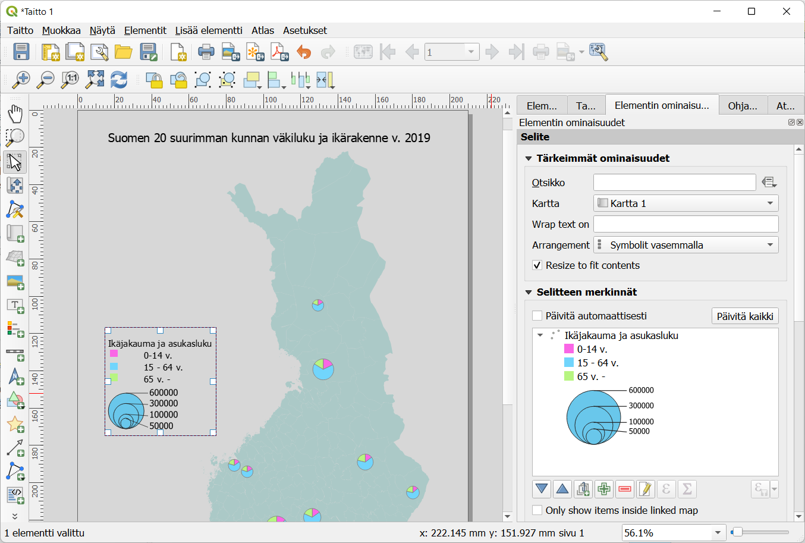

3 Harjoitus 2: Luokittelu, heatmap ja diagrammit
Harjoituksen sisältö
Harjoituksessa laaditaan teemakartta ordinaalisiin arvoihin perustuen symbolin koon avulla. Kokeillaan myös heatmapin laatimista ja piirakkadiagrammin tekoa.
Harjoituksen tavoite
Koulutettava oppii tekemään teemakartan valinnat siten, että ne kuvaavat käsiteltävää ilmiötä ja tuovat esiin aineiston ominaispiirteet.
Arvioitu kesto
60 minuuttia.
3.1 Valmistautuminen
Avaa uusi QGIS-projekti (Projekti > Uusi) ja tallenna se nimellä "QGIS-harjoitus 2". Lisää projektiin seuraavat aineistot:
- ..kurssihakemisto/kuntien ikärakenne 2019.gpkg (tasot: "kuntien ikärakenne 2019" ja "keskipisteet")
3.2 Pistemäisen aineiston luokittelu
Hyödynnetään pistemäisen aineiston luokittelua attribuuttitiedon perusteella. Avaa Keskipisteet-tason Kuvaustekniikka ja aseta kuvaustekniikaksi Porrastettu. Valitse sarake, jonka mukaan luokitellaan (esimerkkiaineistossa Asukasluku 2019). Vaihda metodiksi Koko. Luokittelumenetelmien valinta ja histogrammin tarkastelu toimii täysin samoin kuin aluemaisilla aineistoilla.

Huomaa, että voit asettaa symboliksi muunkin kuin pyöreän pisteen. Lisäksi voit määrittää, minkä kokoinen on aineiston suurin ja pienin symboli. Tällä, samoin kuin luokittelumenetelmällä, on merkittävä vaikutus siihen miten luokkien välinen vaihtelu koetaan. Käytännöllistä on asettaa pienin piste vähintään 3-4 pikselin kokoiseksi, jotta se erottuu taustasta. Suurimman pisteen taas täytyy pysyä riittävän pienenä, jotta se ei peitä taustaa tai muita kohteita sillä zoomaustasolla, jolla karttaa on tarkoitus tarkastella.

3.3 Heatmap
Heatmap eli lämpökartta kuvaa pistemäisten kohteiden tihentymiä ja jakaumaa spatiaalisesti. Heatmapia voi myös painottaa jonkin attribuuttitiedon mukaan.
Heatmap-visualisointitoiminto löytyy Kuvaustekniikka-ikkunasta yhtenä vaihtoehtona muiden joukossa. Vaihda Keskipisteet-tasosi kuvaustekniikka Heatmapiksi. Valitse väriliukuma sekä vaikutussäde. Huomaa, että syntyvä heatmap-pinta peittää alleen kaiken, jos et säädä toisen ääripään väriä läpinäkyväksi. Testaa, miten vaikutussäteen muuttaminen vaikuttaa heatmapiisi. Jos säde on annettu millimetreinä näytöllä, heatmap tarkentuu kun zoomaat karttaa. Jos vaihdat säteen yksiköiksi karttayksiköt, heatmap pysyy saman näköisenä.

Painota vielä heatmapia aineiston Asukasluku 2019 -kentän tiedoilla, jolloin saadaan todellinen väestöntiheyskartta.
3.4 Diagrammit
QGISillä on helppo tehdä myös esimerkiksi piirakkadiagrammeja aineiston arvojen jakaumasta. Jotta kartta ei ruuhkautuisi liikaa, suodata ensin Keskipisteet-tasosta näkyviin vain 20 suurinta kaupunkia (yli 51.000 asukasta).
Aseta Kuvaustekniikka-välilehdellä symbolit kokonaan pois näkyvistä ja siirry Kaaviot-välilehdelle. valitse pudotusvalikosta Ympyräkaavio -vaihtoehto. Attribuutit-rivillä valitaan, mitkä attribuuttitietokentät yhdessä muodostavat halutun arvojoukon. Valitse siis eri ikäryhmät ja siirrä ne oikeanpuoleiseen ikkunaan -painikkeella. Huom! Älä valitse Asukasluku 2019 -kenttää, koska silloin se muodostaisi puolet piirakkakaaviosta ja eri ikäryhmät toisen puolen.

Voit vaihtaa eri sektoreiden värejä klikkaamalla värisymbolia sekä sektoreiden järjestystä raahaamalla attribuuttirivejä. Karttanäyttö-rivillä voit vaihtaa esim. piirakkakaavion reunaviivojen väriä sekä piirakan muodostumisen suuntaa ja aloituskohtaa.
Koko-rivillä voidaan asettaa kaavion koko indikoimaan esimerkiksi kokonaisasukaslukua. Valitse koon määräävä attribuutti, klikkaa Hae ja aseta kaavion minimi- ja maksimikoko samaan tapaan kuin pistesymbolien kanssa. Kokeile miten mittakaavan vaihtaminen Alueesta Läpimittaan vaikuttaa lopulliseen teemakarttaasi.

Tulosteenmuodostaja ja kaavion selite
Ympyräkaavion selite (kaavioiden suhteellinen koko) tulee vielä muodostaa erikseen, jotta se tulee näkyviin tulosteelle. Valitse Selite -välilehti ja aseta merkinnät mieleiseksesi esim. oheisen kuvan mukaisesti. Voit asettaa muutaman kokoluokan manuaalisesti tai käyttää valmiita luokkia.

Avaa sitten Tulosteenmuodostaja ja uusi taitto. Aseta paperi pystysuuntaiseksi (löydät sivun asetukset klikkaamalla tyhjää paperia hiiren oikealla painikkeella). Voit myös asettaa sivun taustavärin täysin läpikuultavaksi; tällöin valmis tulosteesi ei sisällä valkoista suorakaiteen muotoista taustaa vaan ainoastaan siihen tuodut elementit.
Tuo taittoon karttaelementti sekä selite. Voit muokata selitteen merkintöjä, kun poistat ruksin ruudusta Päivitä automaattisesti. Lisää halutessasi kartalle otsikko.

Kun olet valmis, tallenna projektitiedosto kurssihakemistoon pikanäppäimellä CTRL + T tai päävalikosta Projekti > Tallenna.
Psst! Koulutuksen jälkeen saat henkilökohtaista tukea Gispon tukipalvelusta. Lähetä kysymyksesi tai kommenttisi osoitteeseen tuki@gispo.fi!